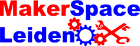

de MakerSpace
De MakerSpace is een ruimte waar mensen met gemeenschappelijke interesse, meestal in wetenschap, technologie, digitale en elektronische kunst elkaar kunnen ontmoeten en samenwerken.
Deelnemerschap
Als deelnemer kun je aan je eigen of gezamenlijke projecten werken in de MakerSpace, eventueel samen met andere deelnemers, en kennis en ervaring delen.
De stichting
De organisatie
MakerSpace Leiden is een stichting, onze formele naam is Stichting MakerSpace Leiden. Onze statuten staan hier online.

Contact
Onze communicatie verloop metname via email.